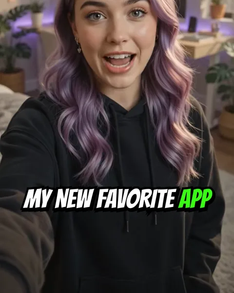

MrBeast-style captionsSubtítulos estilo MrBeast
This is the loudest caption look on the platform, and it is loud on purpose: it is made for a thumb that is already moving. Everything about it says energy before a single word is read.Es el look de subtítulos más ruidoso de la plataforma, y lo es a propósito: está hecho para un pulgar que ya se está moviendo. Todo en él grita energía antes de que se lea una palabra.

What the look is made ofDe qué está hecho el look
- Comic-book capitals, slightly slanted — Bangers is the free match.Mayúsculas de cómic, apenas inclinadas — Bangers es la equivalente gratis.
- A very thick black outline and a hard drop shadow, no blur, offset down and to the right.Un contorno negro muy grueso y una sombra dura, sin desenfoque, corrida abajo a la derecha.
- The key word in a loud colour — green, yellow or red.La palabra clave en un color fuerte — verde, amarillo o rojo.
- Words popping in one at a time, slightly bigger, then settling.Palabras que aparecen de a una saltando, un poco más grandes, y se acomodan.
When it works, and when it does notCuándo funciona y cuándo no
It works for challenges, reactions, reveals — anything where the energy is the content. On a calm explainer or a podcast clip it fights the voice; there a quieter style such as Soft or Native reads better.Funciona en desafíos, reacciones, revelaciones — todo lo que tiene la energía como contenido. En una explicación tranquila o un clip de podcast pelea con la voz; ahí se lee mejor un estilo más calmo como Soft o Native.
How to do it in CharlatanCómo hacerlo en Charlatan
- Open your clip and choose the Word or Punch pace.Abrí tu clip y elegí el ritmo Palabra o Punch.
- In the Styles tab, tap Beast.En la pestaña Diseños, tocá Beast.
- Want it even louder? In Design, raise the shadow distance or switch the keyword colour.¿Más fuerte todavía? En Diseño, subí la distancia de la sombra o cambiá el color de la palabra clave.
- Export at 9:16. The shadow and the pop are burned into the video, so they look the same everywhere.Exportá en 9:16. La sombra y el salto quedan grabados en el video, así se ven igual en todos lados.
Questions people also askLo que también preguntan
What font does MrBeast use for captions?
A slanted comic-book display face. The usual one is not free to use in an app; Bangers is the free font closest to it, and it is the one Charlatan's Beast style uses.
Is the Beast style affiliated with MrBeast?
No. Beast is Charlatan's own style, built from the elements of that look. The name is only used to describe what people search for.
Charlatan is not affiliated with any creator or platform named on this page.Charlatan no tiene relación con ningún creador ni plataforma nombrados en esta página.